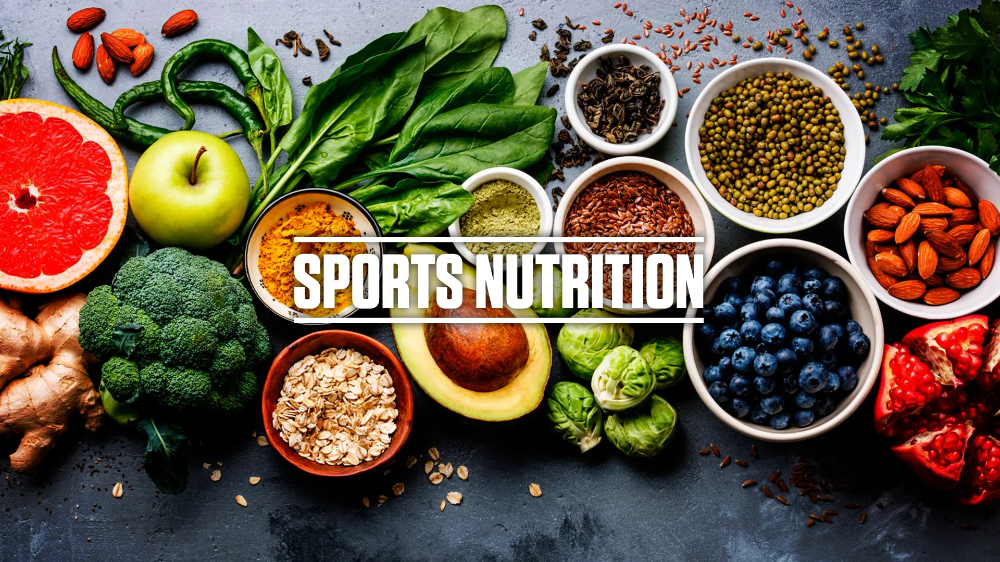

Nutrition && Sports Nutrition
Nutrition and sports nutrition are closely related fields that focus on the role of food and nutrients in supporting overall health, performance, and recovery, with sports nutrition specifically targeting the unique needs of athletes and active individuals. Here's a breakdown of both:
Nutrition:
- Nutrition is the science that examines the relationship between food and health. It encompasses the study of nutrients, their functions in the body, the process of digestion, absorption, metabolism, and excretion, as well as the effects of diet on health and disease. Good nutrition is essential for overall health and well-being, providing the body with the necessary nutrients it needs to function optimally.
-
Key aspects of nutrition include:
- 1.Macronutrients: These are nutrients that provide energy and are needed in large quantities. They include carbohydrates, proteins, and fats.
- 2.Micronutrients: These are nutrients required in smaller quantities but are essential for various physiological functions. They include vitamins and minerals.
- 3.Water: is essential for hydration and plays a crucial role in various bodily functions, including temperature regulation, digestion, and nutrient transport.
- 4.Balanced Diet: A balanced diet consists of a variety of foods from different food groups, providing a wide range of nutrients needed for good health.
- 5. Eating Habits: healthy eating habits, such as portion control, mindful eating, and choosing nutrient-dense foods, is essential for maintaining optimal health and preventing chronic diseases.
Sports Nutrition:
- Sports nutrition is a specialized branch of nutrition that focuses on the unique nutritional needs of athletes and individuals engaged in physical activity. The goal of sports nutrition is to optimize performance, support recovery, and minimize the risk of injury by providing the body with the right nutrients at the right times.
- Key aspects of sports nutrition include:
- 1.Energy Requirements: Athletes have increased energy needs due to the demands of training and competition. Sports nutrition helps athletes meet their energy requirements through proper calorie intake from carbohydrates, proteins, and fats.
- 2.Hydration:Proper hydration is essential for maintaining performance and preventing dehydration, which can impair physical and cognitive function. Sports nutrition strategies focus on optimizing fluid intake before, during, and after exercise.
- 3.Nutrient Timing: Timing nutrient intake around training sessions and competitions can enhance performance, support recovery, and promote muscle growth. This includes pre-exercise, during-exercise, and post-exercise nutrition strategies.
- 4.Supplementation: While a well-balanced diet should provide most of the nutrients athletes need, supplements may be used to fill gaps in nutrition or enhance performance. Common supplements used in sports nutrition include protein powders, creatine, and electrolyte replacements.
- 5.Body Composition: Sports nutrition also addresses body composition goals, such as gaining muscle mass, losing fat, or maintaining weight, depending on the athlete's sport and performance objectives.
Overall, both nutrition and sports nutrition play crucial roles in supporting health, performance, and overall well-being, with sports nutrition providing specialized guidance tailored to the unique needs of athletes and physically active individuals.